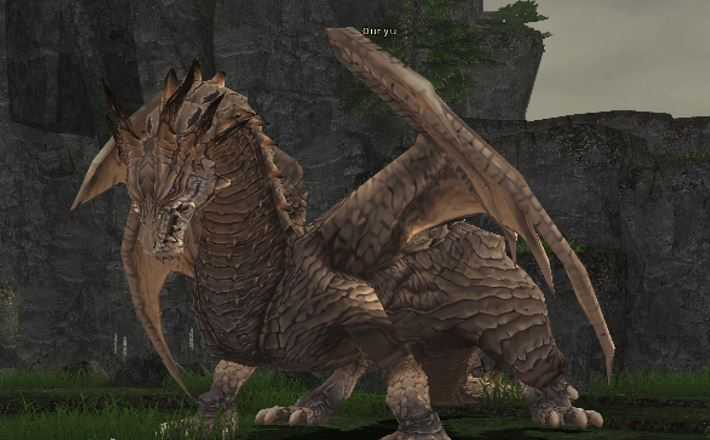

Level 75 reference · Zenith rules
|
Job: Paladin Notorious Monster |
 Image source |


|
Zone |
Level |
Drops |
Steal |
Spawns |
Notes |
|
85 |
1 |
A, T(S) | ||
|
1 |
A, T(S) | ||||
|
1 |
A, T(S) | ||||
|
HP = Detects Low HP; M = Detects Magic; Sc = Follows by Scent; T(S) = True-sight; T(H) = True-hearing JA = Detects job abilities; WS = Detects weaponskills; Z(D) = Asleep in Daytime; Z(N) = Asleep at Nighttime | |||||
Notes:
- Appears in the following BCNMs: Ouryu Cometh
- Appears in Promathia Mission 4-2: The Savage.
- Special attacks: Draw In, Invincible, Absolute Terror, Geotic Breath, Ochre Blast, Touchdown, Stonega III, Stoneskin, Break, Breakga.
- Susceptible to: Sleep, Lullaby, Silence, Gravity, Blind, Paralyze.
- Mistmelt, obtained from the quest Fly High will prevent Ouryu from flying for a certain amount of time.
Adapted from Eden Wiki: Ouryu · Contributors and history · CC BY-SA 4.0. Revision 5821. Layout, links and optional background text adapted for Zenith.